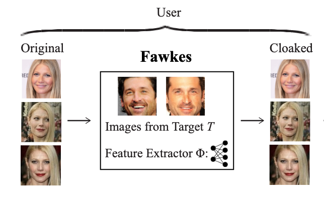

Ph.D. Candidate
Department of Computer Science and Engineering
University of California, San Diego
Email / GitHub / Google Scholar / LinkedIn

About Me
I am a Ph.D. candidate in Computer Science at UC San Diego, co-advised by Prof. Rajesh K. Gupta and Prof. Jingbo Shang. Prior to UCSD, I completed my B.S. (with honors) in Computer Science at Fudan University, where I worked closely with Prof. Yang Chen.
My research focuses on developing robust machine learning systems in resource-constrained and heterogeneous environments. My primary areas of interest include:
- Fast model adaptation under distribution shift
- Machine learning in data-scarce systems
- Federated learning in heterogeneous distributed environments
These research directions have various applications such as anomaly detection, human activity recognition, health analytics, etc.
Selected Publications
-
REACT: Residual-Adaptive Contextual Tuning for Fast Model Adaptation in Threat Detection.
Jiayun Zhang, Junshen Xu, Bugra Can, Yi Fan.
To Appear: The Web Conference (WWW), 2025.
Also presented at Workshop on Fine-Tuning in Modern Machine Learning: Principles and Scalability at NeurIPS, 2024.
-
Contextual Inference From Sparse Shopping Transactions Based on Motif Patterns.
Jiayun Zhang, Xinyang Zhang, Dezhi Hong, Rajesh K. Gupta, and Jingbo Shang.
IEEE Transactions on Knowledge and Data Engineering (TKDE), 2025.
Also presented at Workshop on Machine Learning on Graphs at ACM International Conference on Web Search and Data Mining (WSDM), 2023.
-
Learn from Failure: Fine-tuning LLMs with Trial-and-Error Data for Intuitionistic Propositional Logic Proving
Chenyang An, Zhibo Chen, Qihao Ye, Emily First, Letian Peng, Jiayun Zhang, Zihan Wang, Sorin Lerner, Jingbo Shang.
Annual Meeting of the Association for Computational Linguistics (ACL), 2024.
-
How Few Davids Improve One Goliath: Federated Learning in Resource-Skewed Edge Computing Environments.
Jiayun Zhang, Shuheng Li, Haiyu Huang, Zihan Wang, Xiaohan Fu, Dezhi Hong, Rajesh K. Gupta, Jingbo Shang.
The Web Conference (WWW), 2024. (selected as oral)
-
Physics-Informed Data Denoising for Real-Life Sensing Systems.
Xiyuan Zhang, Xiaohan Fu, Diyan Teng, Chengyu Dong, Keerthivasan Vijayakumar, Jiayun Zhang, Ranak Roy Chowdhury, Junsheng Han, Dezhi Hong, Rashmi Kulkarni, Jingbo Shang and Rajesh K. Gupta.
ACM Conference on Embedded Networked Sensor Systems (SenSys), 2023.
-
Unleashing the Power of Shared Label Structures for Human Activity Recognition.
Xiyuan Zhang, Ranak Roy Chowdhury, Jiayun Zhang, Dezhi Hong, Rajesh K. Gupta, Jingbo Shang.
ACM International Conference on Information and Knowledge Management (CIKM), 2023.
-
Navigating Alignment for Non-identical Client Class Sets: A Label Name-Anchored Federated Learning Framework.
Jiayun Zhang, Xiyuan Zhang, Xinyang Zhang, Dezhi Hong, Rajesh K. Gupta, Jingbo Shang.
ACM SIGKDD Conference on Knowledge Discovery and Data Mining (KDD), 2023.
-
Minimally Supervised Contextual Inference from Human Mobility: An Iterative Collaborative Distillation Framework.
Jiayun Zhang, Xinyang Zhang, Dezhi Hong, Rajesh K. Gupta, and Jingbo Shang.
International Joint Conferences on Artificial Intelligence (IJCAI), 2023.
-
Blacklight: Scalable Defense for Neural Networks against Query-Based Black-Box Attacks.
Huiying Li, Shawn Shan, Emily Wenger, Jiayun Zhang, Haitao Zheng, Ben Y. Zhao.
USENIX Security Symposium, 2022.
-
Understanding the Working Time of Developers in IT Companies in China and the United States.
Jiayun Zhang, Yang Chen, Qingyuan Gong, Aaron Yi Ding, Yu Xiao, Xin Wang, Pan Hui.
IEEE Software, 2021, 38(2):96-106.
-
DeepPredict: A Zone Preference Prediction System for Online Lodging Platforms.
Yihan Ma, Hua Sun, Yang Chen, Jiayun Zhang, Yang Xu, Xin Wang, Pan Hui.
Journal of Social Computing, 2021, 2(1):52-70.
-
Dataset: A video dataset of a wooden box assembly process.
Jiayun Zhang, Petr Byvshev, Yu Xiao.
Workshop on Data: Acquisition To Analysis at ACM Conference on Embedded Networked Sensor Systems (SenSys), 2020.
-
Fawkes: Protecting Privacy against Unauthorized Deep Learning Models.
Shawn Shan, Emily Wenger, Jiayun Zhang, Huiying Li, Haitao Zheng, Ben Y. Zhao.
USENIX Security Symposium, 2020.
-
Detecting Malicious Accounts in Online Developer Communities Using Deep Learning.
Qingyuan Gong, Jiayun Zhang, Yang Chen, Qi Li, Yu Xiao, Xin Wang, Pan Hui.
ACM International Conference on Information and Knowledge Management (CIKM), 2019.
-
Identifying Structural Hole Spanners in Online Social Networks Using Machine Learning.
Qingyuan Gong, Jiayun Zhang, Xin Wang, Yang Chen
ACM SIGCOMM Conference, Poster Session, 2019.
Selected Research Projects
Machine Learning in Heterogeneous Distributed Environments
-
Federated Learning with Heterogeneous Models (WWW 2024 oral)
We explore resource-skewed computing environments where few powerful computing machines collaborate with many lower-capacity mobile devices—a typical scenario where a company develops an ML system with its end users. We design graph hypernetwork-based aggregation by modeling computational graphs, enabling reciprocal knowledge exchange for heterogeneous model architectures to fit varied device capacities.
-
Federated Learning with Non-identical Client Class Sets (KDD 2023)
We identify a new non-IID scenario in federated learning where clients annotate local data based on their own class sets and collaborate to learn a global model that works for the union of the classes. We design FedAlign, a framework that leverages natural language class names to anchor the class representations and guide the align of feature spaces across clients.
Machine Learning in Data-Scarce Systems
-
Minimally-Supervised Contextual Inference from Human Mobility (IJCAI 2023)
We study the problem of contextual inference from human mobility under minimal supervision (i.e., a few labels per class and massive unlabeled data). We design STColab, a collaborative distillation framework that iteratively distills knowledge between spatial and temporal information and enhances contextual inference when only limited labels are available.
-
 Demographic Inference from Sparse Shopping Transactions (TKDE 2025)
Demographic Inference from Sparse Shopping Transactions (TKDE 2025)
We study demographic inference using only a few grocery transactions (e.g., 1 to 10) per household. We propose a graph embedding method based on motif (i.e., subgraph) patterns. We design a motif context selection algorithm based on graph propagation on a user-motif bipartite graph for selecting label-indicative transaction contexts for representation learning.
Security and Privacy on Deep Neural Networks
-

Protecting Personal Privacy against Unauthorized DL Models (USENIX Security 2020)
We build Fawkes, a system that allows individuals to inoculate themselves against unauthorized facial recognition models. Fawkes achieves this by helping users add imperceptible pixel-level changes (i.e. "cloaks") to their photos before releasing them. When used to train facial recognition models, these "cloaked" images produce functional models that cause normal images of the user to be misidentified.
Internship Experience
-

Amazon Web Service. New York, US
Applied Scientist Intern in Security Analytics and AI Research (SAAR) Team. Jun – Sep 2024
Work on fast model adaptation under distribution shift in cybersecurity (e.g., anomaly detection).
-
VMware. Shanghai, China
MTS (Member of Technical Staff) Intern. Apr – Oct 2018
Worked on ML-based log analysis system for automatic program failure detection in internal bug reporting platform.
Professional Services
- Conference Program Committee Member / Reviewer: WWW'25/24, SDM'24, AAAI'23/24, KDD'23, UbiComp'23.
- Journal Reviewer: Computer Communications, IEEE Internet of Things Journal.
Selected Awards
- KDD Student Travel Award 2023
- Chun-Tsung Scholar, Research Endowment Funded by Nobel Laureate Dr. Tsung-Dao Lee 2020
- Outstanding Graduate of Fudan University 2020
- The First Prize of Shanghai Open Data Innovation Research Competition (Top 1 among 65 teams) 2019
- Best Student Award, Mobile Systems and Networking Group in Fudan University (1 out of 32) 2019
- Xiyuan Scholar, Undergraduate Research Program in Fudan University 2018
- Scholarship for Outstanding Students, Fudan University 2016 & 2018 & 2019